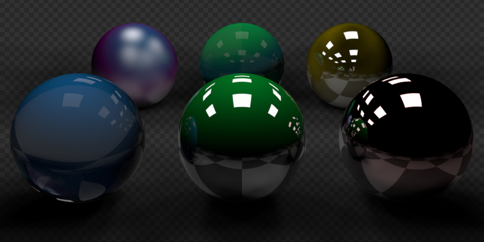

Object¶
Visibility¶
Tham khảo
- Panel:
Xem thêm
Có một số thuộc tính hiển thị chung khác.
- Mask -- Shadow Catcher
Cho phép object chỉ nhận các tia bóng. Cần lưu ý rằng các object shadow catcher vẫn tương tác với các object CG khác thông qua tương tác ánh sáng gián tiếp. Điều này giúp đơn giản hóa việc composite các thành phần CGI vào cảnh quay thực.
Ghi chú
Shadow Catcher cho ra kết quả khác nhau tùy vào việc pass Shadow Catcher có được bật trong cài đặt Render Layer hay không. Khi bật pass Shadow Catcher, mọi tương tác ánh sáng gián tiếp đều được ghi lại. Khi tắt, một phép xấp xỉ đơn giản được dùng thay thế. Phép xấp xỉ đơn giản này được dùng khi render trong viewport.

Ví dụ về shadow catcher. Hãy để ý material của plane vẫn có thể được nhìn thấy trong các quả cầu.¶
Ray Visibility¶
Có thể thiết lập object trở nên vô hình với một số loại ray cụ thể. Điều này có thể được dùng, chẳng hạn, để làm một mesh phát sáng trở nên vô hình với camera ray. Với các object dạng instance, khả năng hiển thị được kế thừa; nếu object cha bị ẩn với một số loại ray nào đó thì object con cũng bị ẩn với các ray đó.
Về hiệu năng, việc dùng các tùy chọn này hiệu quả hơn so với dựng một bố cục shader node cho cùng hiệu ứng. Các object vô hình với một loại ray nhất định sẽ được bỏ qua ngay từ khâu duyệt ray, giúp giảm số lần phóng tia và số lần thực thi shader.
- Camera
Khiến object hiện với Camera; điều này bao gồm cả phối cảnh của viewport khi render trong viewport.
- Diffuse
Khiến object hiện trong các tia diffuse.
- Glossy
Khiến object hiện trong các tia glossy.
- Transmission
Khiến object hiện trong các tia transmission.
- Volume Scatter
Khiến object hiện trong các tia volumetric scatter.
- Shadow
Cho phép object đổ bóng.
- Raycast
Điều khiển xem object có thể bị tia ray cast bắn trúng trong lúc render hay không.
Tắt tùy chọn này sẽ loại object khỏi các tính năng dựa vào ray casting, chẳng hạn shader node Raycast.
Các object dùng material Blended luôn bị loại khỏi khả năng hiển thị với ray cast.
Culling¶
Để kích hoạt các tùy chọn này, các tùy chọn camera cull tương ứng phải được bật trong panel simplify của scene.
- Use Camera Cull
Bỏ qua và theo đó làm object vô hình với các tia nằm ngoài frustum của camera.
- Use Distance Cull
Sẽ loại bỏ mọi object xa camera hơn một khoảng cách cho trước. Khi dùng kết hợp với camera frustum culling, có thể dùng cách này để tránh loại bỏ nhầm các object ở gần vốn nằm ngoài frustum của camera nhưng vẫn hiện trong các phản xạ. Cách này cũng hữu ích để loại bỏ các object nhỏ ở xa camera.
Motion Blur¶
Tham khảo
- Panel:
Mỗi object có cài đặt motion blur riêng, bên cạnh Motion Blur cấp scene. Các cài đặt này nằm trong tab Object Properties của Properties.
Ghi chú
Tùy chọn này chỉ áp dụng cho chuyển động của chính object đó. Tắt nó không ảnh hưởng đến motion blur từ các nguồn khác, như chuyển động của camera hoặc tiêu cự có animation.
- Steps
Điều khiển độ chính xác của deformation motion blur; càng nhiều steps càng tốn bộ nhớ. Số bước thời gian thực tế là \(2^{steps -1}\).
- Deformation
Bật motion blur cho các mesh bị biến dạng như nhân vật có animation, kể cả hair.
Cảnh báo
Một bố cục modifier làm thay đổi topology của mesh theo thời gian sẽ không thể render đúng deformation motion blur. Với các object như vậy nên tắt deformation blur. Các ví dụ phổ biến là Boolean có animation, Deformation đặt trước Edge Split, và các modifier Remesh, Skin hay Decimate.
Shading¶
Tham khảo
- Panel:
Shadow Terminator¶
- Geometry Offset
Dịch chuyển các tia ra khỏi bề mặt để giảm artifacts shadow terminator trên geometry low-poly. Giá trị cao hơn ảnh hưởng đến nhiều triangle hơn: giá trị một ảnh hưởng đến mọi triangle, còn zero không có tác dụng. Giá trị mặc định chỉ ảnh hưởng đến các triangle ở góc xiên so với ánh sáng và có thể loại bỏ phần lớn artifacts.
Khác với Shading Offset, tùy chọn này ít ảnh hưởng đến ánh sáng, nên là phương pháp được ưu tiên để xử lý artifacts shadow terminator.
- Shading Offset
Đẩy shadow terminator (đường phân chia giữa vùng sáng và tối) về phía nguồn sáng để che các artifacts trên geometry low-poly, như ví dụ dưới đây:
Ghi chú
Thuộc tính này làm thay đổi nhân tạo ánh sáng của scene, không bảo toàn năng lượng và do đó không chính xác về mặt vật lý (hãy dùng Geometry Offset thay thế).
Fast GI Approximation¶
- AO Distance
Ghi đè AO Distance của world; nếu giá trị bằng không thì khoảng cách của world được dùng.
Caustics¶
Đánh dấu object là caustic caster hoặc caustic receiver. Tính năng này được dùng cùng một đèn hoặc World Shader có bật Shadow Caustics để tăng tốc có chọn lọc việc render caustics của các object trong scene.
Ghi chú
Kỹ thuật render dùng để tăng tốc việc render caustics dựa trên MNEE. Kỹ thuật này và bản cài đặt trong Cycles có một số hạn chế:
Chỉ các caustic khúc xạ nằm trong bóng của object mới hoạt động. Caustics từ phản xạ hoặc caustics nằm ngoài vùng bóng không được render bằng kỹ thuật này.
MNEE Caustics là phép xấp xỉ của caustics nên sẽ cho kết quả không chính xác về vật lý trong nhiều tình huống. Ví dụ gồm độ sáng sai và thể hiện sai các caustic do bề mặt nhám hoặc bề mặt cong gây ra.
Trong các material phức tạp có nhiều BSDF khúc xạ, MNEE sẽ chỉ tạo caustics cho một trong các BSDF đó.
Các cài đặt Filter Glossy bị bỏ qua khi dùng MNEE cho caustics khúc xạ.
Tia MNEE Caustic có thể xuyên qua tối đa 6 bề mặt Caustic Caster giữa một Caustic Receiver và đèn Shadow Caustic trước khi tia bị chấm dứt và caustics bị bỏ qua.
Các node Ambient Occlusion và Bevel sẽ không cho kết quả hợp lệ trên các object là Caustic caster hoặc Caustic receiver, khi scene có chứa một Caustic caster, một Caustic receiver đang hoạt động và đèn Shadow Caustics.
MNEE Caustics chỉ hoạt động nếu caustic caster có normal mượt.
Material volumetric không được tính đến khi tính MNEE caustics.
Bump map và normal map bị bỏ qua khi tính caustics.
Render GPU bằng các thiết bị HIP dòng Radeon RX 6000 trên Windows không được hỗ trợ.
- Cast Shadow Caustics
Đánh dấu object là caustic caster.
- Receive Shadow Caustics
Đánh dấu object là caustic receiver.
Light Group¶
- Light Group
Chọn Light Group để thêm Object hoặc Light hiện thời vào.
- Add Light Group
Nếu tên nhập vào trường Light Group không khớp với Light Group nào hiện có, việc nhấn nút này sẽ tạo một Light Group với tên đó và gán Object hoặc Light đang được chọn vào nhóm.
Light Linking¶
Giới hạn ảnh hưởng của ánh sáng theo các object được chỉ định, bằng Light Linking.
- Receiver Collection
Tập hợp các object sẽ nhận ánh sáng phát ra từ object này.
Shadow Linking¶
Giới hạn bóng đổ theo các object được chỉ định, bằng Light Linking.
- Shadow Blocker Collection
Tập hợp các object sẽ đóng vai trò chặn bóng cho ánh sáng phát ra từ object này.